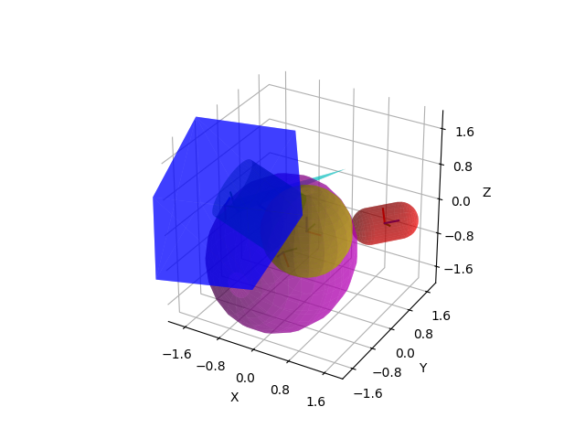

Note
Click here to download the full example code
Plot Random Geometries¶
Plotting of several geometric shapes is directly supported by the library.
print(__doc__)
import numpy as np
import matplotlib.pyplot as plt
from pytransform3d.plot_utils import (
make_3d_axis, plot_box, plot_sphere, plot_cylinder, plot_ellipsoid,
plot_capsule, plot_cone)
from pytransform3d.transformations import (
random_transform, plot_transform, translate_transform)
random_state = np.random.RandomState(2823)
ax = make_3d_axis(2)
box2origin = random_transform(random_state)
size = random_state.rand(3) * 3
plot_transform(ax=ax, A2B=box2origin, s=0.3)
plot_box(ax=ax, A2B=box2origin, size=size, color="b", alpha=0.5,
wireframe=False)
p = random_state.randn(3)
radius = float(random_state.rand())
plot_transform(ax=ax, A2B=translate_transform(np.eye(4), p), s=0.3)
plot_sphere(ax=ax, p=p, radius=radius, color="y", alpha=0.5, wireframe=False)
cylinder2origin = random_transform(random_state)
length = float(random_state.rand()) * 5
radius = float(random_state.rand())
plot_transform(ax=ax, A2B=cylinder2origin, s=0.3)
plot_cylinder(ax=ax, A2B=cylinder2origin, length=length, radius=radius,
color="g", alpha=0.5, wireframe=False)
ellipsoid2origin = random_transform(random_state)
radii = random_state.rand(3) * 3
plot_transform(ax=ax, A2B=ellipsoid2origin, s=0.3)
plot_ellipsoid(ax=ax, A2B=ellipsoid2origin, radii=radii, color="m", alpha=0.5,
wireframe=False)
capsule2origin = random_transform(random_state)
height = float(random_state.rand()) * 2
radius = float(random_state.rand())
plot_transform(ax=ax, A2B=capsule2origin, s=0.3)
plot_capsule(ax=ax, A2B=capsule2origin, height=height, radius=radius,
color="r", alpha=0.5, wireframe=False)
cone2origin = random_transform(random_state)
height = float(random_state.rand()) * 5
radius = float(random_state.rand())
plot_transform(ax=ax, A2B=cone2origin, s=0.3)
plot_cone(ax=ax, A2B=cone2origin, height=height, radius=radius, color="c",
alpha=0.5, wireframe=False)
plt.show()
Total running time of the script: ( 0 minutes 0.128 seconds)